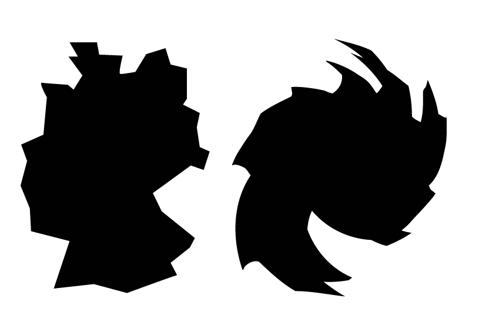

Wie geht es uns? ist ein lebendiges Buch, das autark und automatisiert die Laune der Bundesrepublik abbildet. Gestartet am 19.7.2019.
Es entstand im Workshop Code is cool von Jacob Heftmann (Sommer 2019, HBKsaar). Gestaltet und geschrieben von Christian Dietz.
